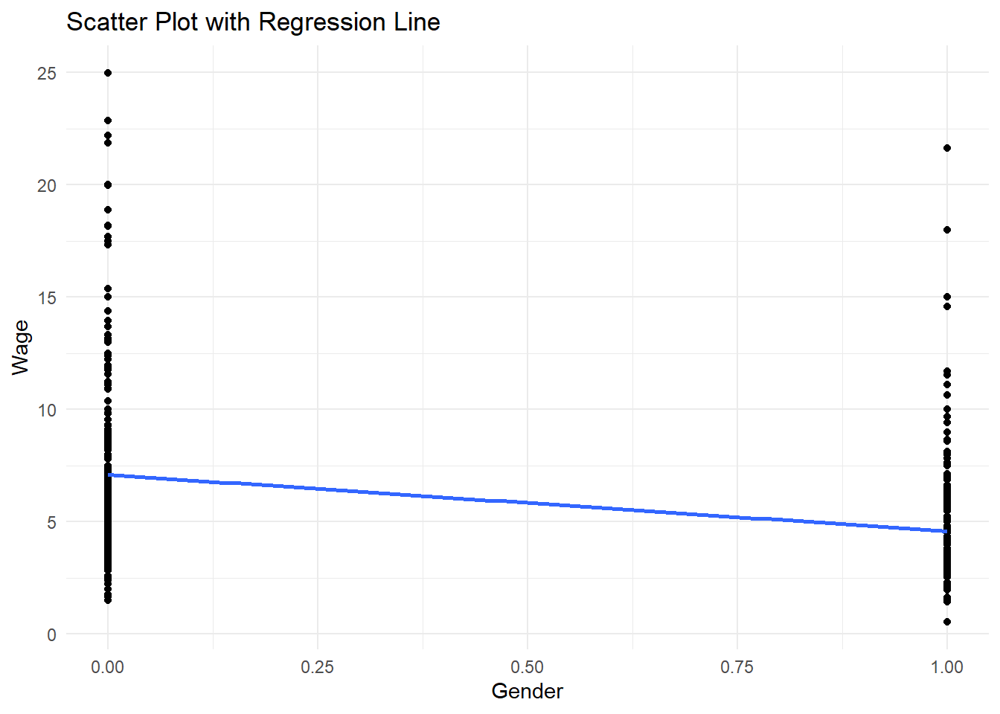
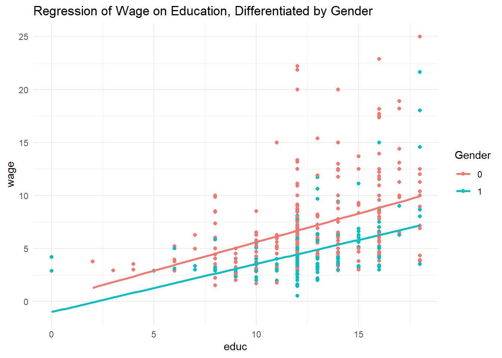

15 Multivariate Regression with Dummy Variables
15.1 Dummy Variables
Binary variables defined as 0 or 1;
D=1 if the criterion is satisfied
D=0 if not
Convey qualitative info
Examples: female, married, graduated, passed
Example: variable female where female=1 for females, female=0 for males
“gender” is not a good variable name because it is not clear if gender=1 for male or femal
Can be an independent variable or dependent variable in a probit/logit model
| Code | Definition |
|---|---|
data <- data %>% mutate(response_dummy = if_else(response == "yes", 1, 0)) |
This is when you generate a new variable in your dataset. You can change “yes” to female or married, etc. |
Dataset_CP_modified <- Dataset_CP %>%mutate(Q37a_HoursWeekChildren_level = case_when (Q37a_HoursWeekChildren <= 5 ~ "low",Q37a_HoursWeekChildren > 5 & Q37a_HoursWeekChildren <= 15 ~ "medium",Q37a_HoursWeekChildren > 15 ~ "high")) |
This is when you have numerous categories to represent dummy variables |
Regression Models:
wage = \(\beta_0\) + \(\epsilon\)
Since there is only the intercept, there are no independent variables:
##
## Call:
## lm(formula = wage ~ 1, data = sample1)
##
## Residuals:
## Min 1Q Median 3Q
## -5.3661 -2.5661 -1.2461 0.9839
## Max
## 19.0839
##
## Coefficients:
## Estimate Std. Error
## (Intercept) 5.896 0.161
## t value
## (Intercept) 36.62
## Pr(>|t|)
## (Intercept) <0.0000000000000002
##
## (Intercept) ***
## ---
## Signif. codes:
## 0 '***' 0.001 '**' 0.01 '*'
## 0.05 '.' 0.1 ' ' 1
##
## Residual standard error: 3.693 on 525 degrees of freedomThis shows the average wage.
Now, let’s look at when the independent variable is represented by a binary variable (1,0)
wage = \(\beta_0\) + \(\delta_0\)female + \(\epsilon\)
The coefficient is the difference in wage for females compared to males
This model has different intercepts for females (\(\beta_0\)+ \(\delta_0\)) and males \(\beta_0\)
The intercept for females is the average wage for females and the intercept for males is the average wage for males
The regression t-test for significance of the coefficient on female is identical to the t-test for significant differences in wage between the female group and the male group, with the same mean, t-statistic, and p-value.
## ## Call: ## lm(formula = wage ~ sample1$female, data = sample1) ## ## Residuals: ## Min 1Q Median 3Q ## -5.5995 -1.8495 -0.9877 1.4260 ## Max ## 17.8805 ## ## Coefficients: ## Estimate ## (Intercept) 7.0995 ## sample1$female -2.5118 ## Std. Error ## (Intercept) 0.2100 ## sample1$female 0.3034 ## t value ## (Intercept) 33.806 ## sample1$female -8.279 ## Pr(>|t|) ## (Intercept) < 0.0000000000000002 ## sample1$female 0.00000000000000104 ## ## (Intercept) *** ## sample1$female *** ## --- ## Signif. codes: ## 0 '***' 0.001 '**' 0.01 '*' ## 0.05 '.' 0.1 ' ' 1 ## ## Residual standard error: 3.476 on 524 degrees of freedom ## Multiple R-squared: 0.1157, Adjusted R-squared: 0.114 ## F-statistic: 68.54 on 1 and 524 DF, p-value: 0.000000000000001042
We can plot the regression line;
sample1 %>%
ggplot(aes(x=female, y=wage))+
geom_point()+
geom_smooth(method="lm", se=FALSE)+
theme_minimal()+
labs(x="Gender", y="Wage",
title="Scatter Plot with Regression Line")## `geom_smooth()` using formula =
## 'y ~ x'
The figure shows the slope -2.51 and the intercepts: 7.10 and 4.59
Results:
| Variables | Wage | Wage |
|---|---|---|
| female | -2.51*** |
|
| intercept | 5.90*** |
7.10*** |
We introduced a female dummy variable (1=female, 0 otherwise (known as intercept dummy)
This specification says that the intercept (or the average difference in wages between females and males) is different.
Intercept, \(\beta_0\) , measures the intercept of the default group (males) and \(\beta_0 + \delta_0\) is the intercept for females
\(\beta_0 = 5.90\) is the average value of wage.
\(\delta_0 = -2.51\) is the effect of the indicator variable female on wage
Females have 2.51 lower wages than males. The interpretation of the coefficient is with respect to the reference/base category of males
The intercept or average wage for males is \(\beta_0 = 7.10\)
The average wage for females is \(\beta_0+\delta_0 = 7.10 + (-2.51)=4.59\)
15.2 How to Interpret Statistical Significance in Regression
When reading regression results, do not stop at the sign of the coefficient. You should always ask:
What does the coefficient mean economically?
Is it statistically different from zero?
How large is the effect?
How well does the model explain the outcome overall?
15.2.1 What does a statistically significant coefficient mean?
A coefficient is statistically significant when the data provide enough evidence that the true effect is unlikely to be zero.
A common rule is:
p-value < 0.01: very strong evidence against the null hypothesis
p-value < 0.05: strong enough evidence under the conventional 5% level
p-value < 0.10: weak or marginal evidence
p-value > 0.10: not statistically significant under conventional levels
15.2.2 What does “not significant” mean?
A not significant variable does not prove that the variable has no effect. It means that, given the sample and model used, there is not enough statistical evidence to conclude that the effect is different from zero.
Possible reasons include:
the true effect may genuinely be zero
the sample size may be too small
the variable may be measured with error
the standard errors may be large
the variable may be highly correlated with other regressors
So a non-significant coefficient should be interpreted carefully:
“The estimated effect is X, but the evidence is not strong enough to conclude that this effect is statistically different from zero.”
15.2.3 What if the p-value is 0.08?
A p-value of 0.08 means that if the true coefficient were actually zero, there would be an 8% chance of observing a coefficient at least this extreme just by random sampling variation.
Interpretation:
It is not significant at the 5% level
It is significant at the 10% level
This is often called marginally significant or weak evidence
You should not describe this as “definitely significant,” but you also should not treat it the same as a p-value like 0.60. A careful wording would be:
“The coefficient is marginally significant at the 10% level, suggesting some evidence of an association, but the evidence is weaker than under the conventional 5% threshold.”
15.2.4 Is the relationship strong?
“Strong” can mean different things, so be precise.
A relationship may be considered strong in at least three different senses:
Statistical strength: the coefficient is estimated precisely and is statistically significant
Economic or practical strength: the coefficient is large enough to matter in real terms
Overall explanatory strength: the model has a relatively high , meaning it explains a substantial share of the variation in the dependent variable
A variable can be statistically significant but economically small. For example, a coefficient of 0.01 with a huge sample might be significant but practically trivial.
Likewise, a coefficient can be economically large but statistically insignificant if the estimate is imprecise.
15.2.5 Good habits when interpreting regression output
For each important regressor, comment on:
sign: positive or negative
magnitude: how much Y changes when X changes
significance: whether the estimate is statistically precise
context: whether the effect is meaningful economically or substantively
15.2.5.1 Dummy variable trap
This refers to the problem that not all categories can be included in the regression and one category needs to be left out, which is called a base or reference category.
For example, male and female cannot be both included in the regression because of perfect collinearity
Including male instead of female in the regression:
wage = \(\beta_0 + \delta_0(1 - male) + \epsilon\) =
wage = (\(\beta_0 + \delta_0\)) - \(\delta_0\)male + \(\epsilon\)
The coefficient \(-\delta_0\) on male has the same magnitude and significance, but opposite sign from the coefficient on female.
The intercept in the model with male is \((\beta_0+\delta_0)\) , which can also be obtained from the model with female (average wage of females)
A regression can be estimated with both male and female but with no constant (this approach is not commonly used)
Interactions with another dummy variable
Interaction term - multiply variable by dummy variable
- Interaction terms for variables female and married can be done in two different ways.
- include female and married and
female*marriedin the regression
wage = \(\beta_0 +\beta_1female+\beta_2married+\beta_3female*married+\epsilon\)
- Create four categories:
female*single,male*single,female*married, andmale*married; include 3 of them in the regression model (male*singleis the reference category).
Note: Choice of reference category depends on you but commonly, the most number of observations in the category is chosen.
sample_modified <- sample1 %>% mutate(female_married = if_else(female == 1 & married == 1, 1, 0), male_single = if_else(female == 0 & married == 0, 1, 0), male_married = if_else(female == 0 & married == 1, 1, 0), female_single = if_else(female==1 & married == 0, 1,0)) head(sample_modified)## wage educ exper tenure ## 1 3.10 11 2 0 ## 2 3.24 12 22 2 ## 3 3.00 11 2 0 ## 4 6.00 8 44 28 ## 5 5.30 12 7 2 ## 6 8.75 16 9 8 ## nonwhite female married numdep ## 1 0 1 0 2 ## 2 0 1 1 3 ## 3 0 0 0 2 ## 4 0 0 1 0 ## 5 0 0 1 1 ## 6 0 0 1 0 ## smsa northcen south west ## 1 1 0 0 1 ## 2 1 0 0 1 ## 3 0 0 0 1 ## 4 1 0 0 1 ## 5 0 0 0 1 ## 6 1 0 0 1 ## construc ndurman trcommpu ## 1 0 0 0 ## 2 0 0 0 ## 3 0 0 0 ## 4 0 0 0 ## 5 0 0 0 ## 6 0 0 0 ## trade services profserv ## 1 0 0 0 ## 2 0 1 0 ## 3 1 0 0 ## 4 0 0 0 ## 5 0 0 0 ## 6 0 0 1 ## profocc clerocc servocc ## 1 0 0 0 ## 2 0 0 1 ## 3 0 0 0 ## 4 0 1 0 ## 5 0 0 0 ## 6 1 0 0 ## lwage expersq tenursq ## 1 1.131402 4 0 ## 2 1.175573 484 4 ## 3 1.098612 4 0 ## 4 1.791759 1936 784 ## 5 1.667707 49 4 ## 6 2.169054 81 64 ## female_married male_single ## 1 0 0 ## 2 1 0 ## 3 0 1 ## 4 0 0 ## 5 0 0 ## 6 0 0 ## male_married female_single ## 1 0 1 ## 2 0 0 ## 3 0 0 ## 4 1 0 ## 5 1 0 ## 6 1 0
Regression model:
\(wage = \beta_0+\beta_1femalesingle+\beta_2femalemarried+\beta_3malemarried+\epsilon\)
You need to drop the reference category variable which we already did when we dropped malesingle
interaction<-lm(wage~female_married+female_single+male_married, data=sample_modified)
summary(interaction)##
## Call:
## lm(formula = wage ~ female_married + female_single + male_married,
## data = sample_modified)
##
## Residuals:
## Min 1Q Median 3Q
## -5.7530 -1.7327 -0.9973 1.2566
## Max
## 17.0184
##
## Coefficients:
## Estimate
## (Intercept) 5.1680
## female_married -0.6021
## female_single -0.5564
## male_married 2.8150
## Std. Error
## (Intercept) 0.3614
## female_married 0.4645
## female_single 0.4736
## male_married 0.4363
## t value
## (Intercept) 14.299
## female_married -1.296
## female_single -1.175
## male_married 6.451
## Pr(>|t|)
## (Intercept) < 0.0000000000000002
## female_married 0.195
## female_single 0.241
## male_married 0.000000000253
##
## (Intercept) ***
## female_married
## female_single
## male_married ***
## ---
## Signif. codes:
## 0 '***' 0.001 '**' 0.01 '*'
## 0.05 '.' 0.1 ' ' 1
##
## Residual standard error: 3.352 on 522 degrees of freedom
## Multiple R-squared: 0.181, Adjusted R-squared: 0.1763
## F-statistic: 38.45 on 3 and 522 DF, p-value: < 0.00000000000000022Regression model:
\(wage = \beta_0+\beta_1female+\beta_2married+\beta_3femalemarried+\epsilon\)
##
## Call:
## lm(formula = wage ~ female + married + female_married, data = sample_modified)
##
## Residuals:
## Min 1Q Median 3Q
## -5.7530 -1.7327 -0.9973 1.2566
## Max
## 17.0184
##
## Coefficients:
## Estimate
## (Intercept) 5.1680
## female -0.5564
## married 2.8150
## female_married -2.8607
## Std. Error
## (Intercept) 0.3614
## female 0.4736
## married 0.4363
## female_married 0.6076
## t value
## (Intercept) 14.299
## female -1.175
## married 6.451
## female_married -4.708
## Pr(>|t|)
## (Intercept) < 0.0000000000000002
## female 0.241
## married 0.000000000253
## female_married 0.000003202330
##
## (Intercept) ***
## female
## married ***
## female_married ***
## ---
## Signif. codes:
## 0 '***' 0.001 '**' 0.01 '*'
## 0.05 '.' 0.1 ' ' 1
##
## Residual standard error: 3.352 on 522 degrees of freedom
## Multiple R-squared: 0.181, Adjusted R-squared: 0.1763
## F-statistic: 38.45 on 3 and 522 DF, p-value: < 0.00000000000000022Let’s have pretty regression results table:
library(stargazer)
# Create a regression table
stargazer(null, interaction, int1, #regression
type = "text", title = "Regression Results",
dep.var.labels = "Wage",
#covariate.labels = c("B1", "B2", "BN"), label your independent variables
omit.stat = c("f", "ser"), digits = 3) # Omits F-statistic and standard error from the table and sets decimal places to 3##
## Regression Results
## ============================================
## Dependent variable:
## -----------------------------
## Wage
## (1) (2) (3)
## --------------------------------------------
## female -0.556
## (0.474)
##
## married 2.815***
## (0.436)
##
## female_married -0.602 -2.861***
## (0.464) (0.608)
##
## female_single -0.556
## (0.474)
##
## male_married 2.815***
## (0.436)
##
## Constant 5.896*** 5.168*** 5.168***
## (0.161) (0.361) (0.361)
##
## --------------------------------------------
## Observations 526 526 526
## R2 0.000 0.181 0.181
## Adjusted R2 0.000 0.176 0.176
## ============================================
## Note: *p<0.1; **p<0.05; ***p<0.01Interpretation of Results:
Model 1: The baseline wage when all other variables are absent. The reference group is single males.
Model 2:
Female, Single: \(-0.556\) (not significant) –> Single females earn 0.556 less than single males, but the result is not statistically significant.
Male, Married: \(2.815\)*** –> Married males earn 2.815 more than single males
Constant: \(5.168\)*** –> The wage for single males
Model 3:
Female: \(-0.556\) (not significant) –> Being female alone does not significantly impact wages
Married: \(2.815\)*** –> Being married increases wages
Female x Married Interaction: \(-2.861\)*** –> Being a married female results in a decrease of 2,861 on wages.
Constant: \(5.168\)*** –> The wage for single males
Model Fit:
Model 1: No explanatory power
Model 2 and 3: The models explain 18.1% of the variation in wages.
15.2.6 How to interpret the interaction carefully
Do not say immediately that “being a married female decreases wage by 2.861.” That is incomplete.
The coefficient on the interaction term tells us how much the effect of one variable changes when the other variable equals 1.
Here:
effect of marriage for males = coefficient on
marriedeffect of marriage for females = coefficient on
married+ coefficient onfemale_married
So if:
married = 2.815female_married = -2.861
then for females, the marriage effect is:
This means marriage raises wage for males, but for females the marriage effect is close to zero in this example.
15.2.7 Model fit
Model 1: no explanatory power beyond the mean
Models 2 and 3: explain about 18.1% of the variation in wages
An \(R^2\) of 0.181 means the model explains 18.1% of the sample variation in wage, while the remaining 81.9% is left unexplained by variables included in the model.
This is not necessarily “bad.” In cross-sectional wage regressions, it is common for much of the variation to remain unexplained because wages are influenced by many unobserved factors.
15.2.9 Dummy Variable and Continuous Variable in Regression
\(wage=\beta_0+\beta_1educ+\epsilon\)
This model has the same intercept and slope on education for females and males
\(wage=\beta_0+\beta_1educ+\delta_0female+\epsilon\)
The effect of female on wage = \(\delta_0\)
The same slope for females and males = \(\beta_1\)
Intercept for males = \(\beta_0\)
Intercept for females = \(\beta_0+\delta_0\)
## ## Call: ## lm(formula = wage ~ educ + female, data = sample_modified) ## ## Residuals: ## Min 1Q Median 3Q ## -5.9890 -1.8702 -0.6651 1.0447 ## Max ## 15.4998 ## ## Coefficients: ## Estimate Std. Error ## (Intercept) 0.62282 0.67253 ## educ 0.50645 0.05039 ## female -2.27336 0.27904 ## t value ## (Intercept) 0.926 ## educ 10.051 ## female -8.147 ## Pr(>|t|) ## (Intercept) 0.355 ## educ < 0.0000000000000002 ## female 0.00000000000000276 ## ## (Intercept) ## educ *** ## female *** ## --- ## Signif. codes: ## 0 '***' 0.001 '**' 0.01 '*' ## 0.05 '.' 0.1 ' ' 1 ## ## Residual standard error: 3.186 on 523 degrees of freedom ## Multiple R-squared: 0.2588, Adjusted R-squared: 0.256 ## F-statistic: 91.32 on 2 and 523 DF, p-value: < 0.00000000000000022
Results:
| Variables | wage | female dummy wage | male dummy wage |
|---|---|---|---|
| educ | 0.54*** | 0.51*** | 0.51*** |
| female | -2.27*** | ||
| male | 2.27*** | ||
| Intercept | -0.91 | 0.62 | -1.65** |
Plotting the graph:
ggplot(sample_modified, aes(x = educ, y = wage, color = as.factor(female))) + #differentiates point by female
geom_point() +
geom_smooth(method = "lm", formula = y ~ x, se = FALSE) +
labs(color = "Gender") +
theme_minimal() +
ggtitle("Regression of Wage on Education, Differentiated by Gender")
15.2.10 Interaction terms with non-dummy variables
\(wage=\beta_0+\beta_1educ+\delta_0female+\delta_1female*educ+\epsilon\)
This model has different slopes on education and intercepts for females and males
slope for males = \(\beta_1\)
slope for females = \(\beta_1+\delta_1\)
intercept for males = \(\beta_0\)
intercept for females = \(\beta_0+\delta_0\)
model <- lm(wage ~ educ + female + female:educ, data = sample_modified) summary(model) #you can create interaction term when regressing by using ':'## ## Call: ## lm(formula = wage ~ educ + female + female:educ, data = sample_modified) ## ## Residuals: ## Min 1Q Median 3Q ## -6.1611 -1.8028 -0.6367 1.0054 ## Max ## 15.5258 ## ## Coefficients: ## Estimate Std. Error ## (Intercept) 0.20050 0.84356 ## educ 0.53948 0.06422 ## female -1.19852 1.32504 ## educ:female -0.08600 0.10364 ## t value ## (Intercept) 0.238 ## educ 8.400 ## female -0.905 ## educ:female -0.830 ## Pr(>|t|) ## (Intercept) 0.812 ## educ 0.000000000000000424 ## female 0.366 ## educ:female 0.407 ## ## (Intercept) ## educ *** ## female ## educ:female ## --- ## Signif. codes: ## 0 '***' 0.001 '**' 0.01 '*' ## 0.05 '.' 0.1 ' ' 1 ## ## Residual standard error: 3.186 on 522 degrees of freedom ## Multiple R-squared: 0.2598, Adjusted R-squared: 0.2555 ## F-statistic: 61.07 on 3 and 522 DF, p-value: < 0.00000000000000022
The regression implies:
slope for males = 0.54
slope for females = 0.45
intercept for males = 0.20
intercept for females = -1.00
Then the returns to education are slightly lower for females than for males, but whether this difference matters depends on the significance of the interaction term.
If the coefficients on female and female:educ are not significant, then:
we do not have enough evidence that the intercept differs by sex
we do not have enough evidence that the return to education differs by sex
A careful interpretation is:
“Although the point estimates suggest different intercepts and slopes for males and females, these differences are not statistically distinguishable from zero in this sample.”
15.2.11 F-test for differences across groups
F-test is used to test whether the returns to education, experience, and tenure are the same for two groups (males and females).
\(H_0\) : The coefficients on interaction terms are all zero, meaning that the impact of non-dummy variables on dependent variables is the same for the two groups.
\(H_a\) : At least one of the coefficients is not zero, meaning, the impact is different for the two groups.
Step 1: Fit the Full and Reduced Models
full<-lm(wage~educ+exper+tenure+female+female:educ+female:exper+female:tenure, data=sample_modified)This model includes interactiono terms, allowing the effects of continuous variables to be different for females.
This model assumes education, experience, and tenure have the same impact for males and females but allows for general difference in wage levels through female coefficient.
Step 2: Perform the F-Test
## Analysis of Variance Table
##
## Model 1: wage ~ educ + exper + tenure + female
## Model 2: wage ~ educ + exper + tenure + female + female:educ + female:exper +
## female:tenure
## Res.Df RSS Df Sum of Sq
## 1 521 4557.3
## 2 518 4394.2 3 163.06
## F Pr(>F)
## 1
## 2 6.4074 0.0002878 ***
## ---
## Signif. codes:
## 0 '***' 0.001 '**' 0.01 '*'
## 0.05 '.' 0.1 ' ' 1This compares the full and reduced model; If the p-value<0.05, reject the null.
Be careful: this test is about whether the effects of the regressors differ across groups, not simply whether females and males have different wage levels.